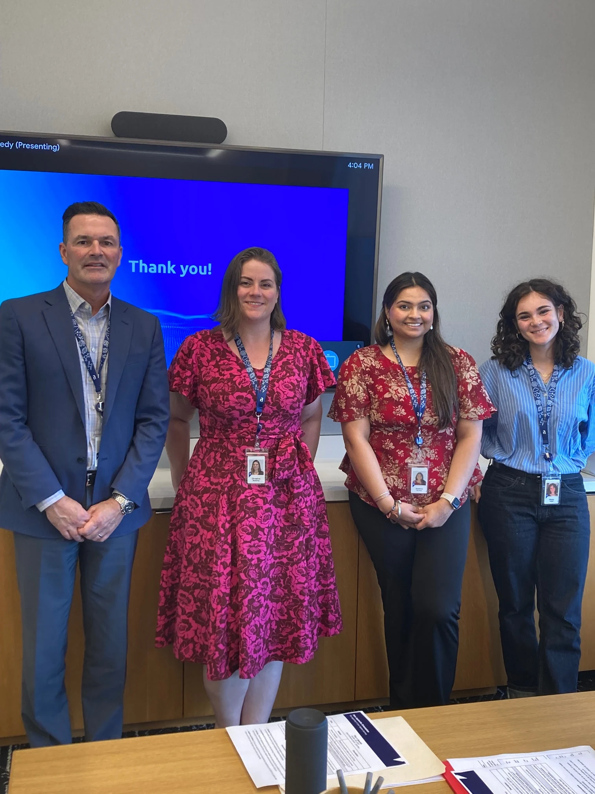

October 2024 - present
I began my journey at Appian in October of 2024, where I quickly learned there was so much beyond computer science than building models and programs with the languages I learned in school. In fact, the way these softwares communicate with one another, store information, build off of one another, and allow for user dictation is just as imperative to this field and how we interact with technology daily.
As a Solution Engineer, I work with customers to provide technical solutions with their Appian software through investigation, testing, and teamwork. This role has deepened my understanding of system architecture, data integration, and user experience design, all while sharpening my communication and problem-solving skills. Collaborating with both technical and non-technical stakeholders, I’ve learned how to bridge the gap between complex backend logic and intuitive front-end interfaces—ultimately learning how to learn and how to convey information effectively.